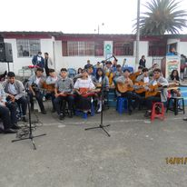
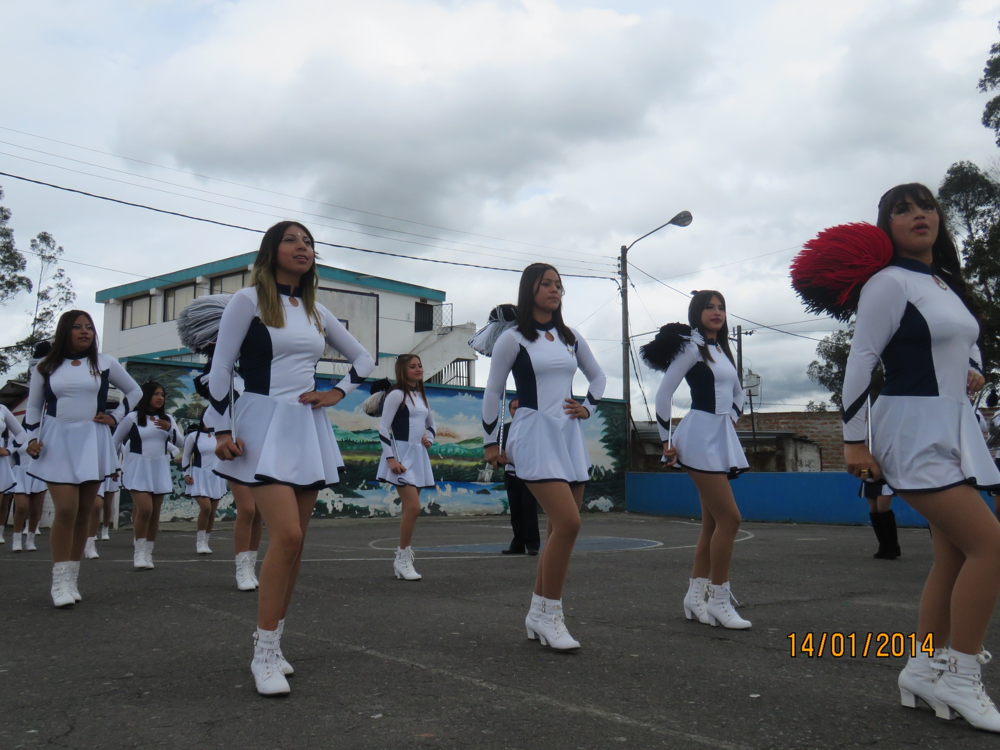
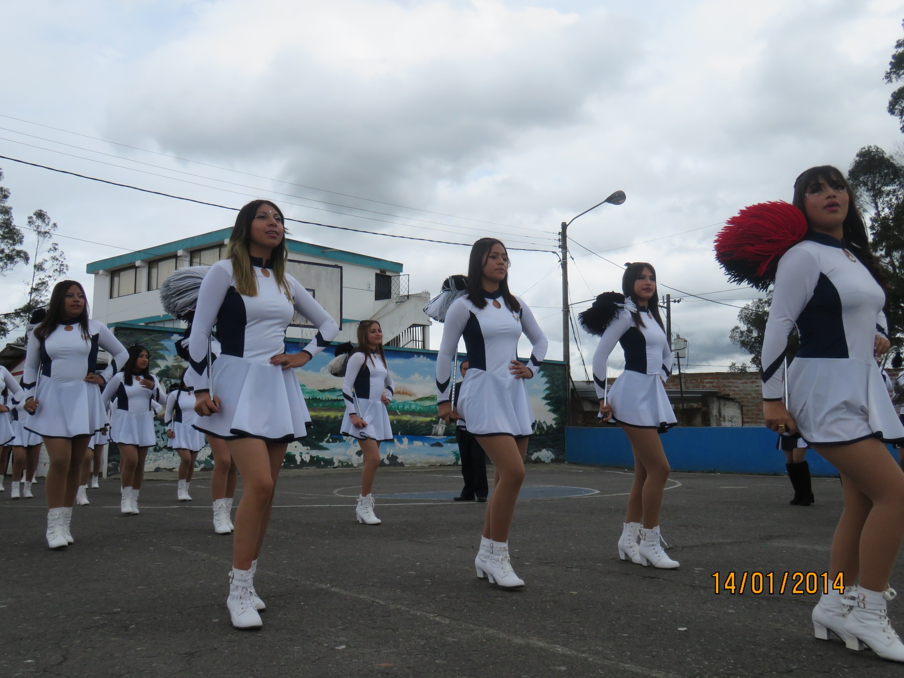

El uniforme de parada consta de:
- una camisa de tela,
- sacó de lana para las mujeres
- de tela para los hombres color plomo
- pantalón azul marino para los hombres
- falda azul marino para las mujeres
- medias nailon color euro color para las mujeres
- adicional la corbata para ambos con el logotipo de la Institución
.png)
.png)
Uniforme del Diario
El uniforme del diario consta de:
- una camiseta polo con el logo de la Institución
- saco plomo de lana para las mujeres
- de tela para los hombres
- falda con 3 pliegos a al lado derecho color azul marino para las mujeres
- medias color blanco con el sello de la Institución
- pantalón azul marino para los hombres


Uniforme de Cultura Fisica
Consta de :
- un saco azul con el logo de la Institución un pantalón azul de la parte exterior del uniforme,
- la parte interna cuenta con una camiseta de color azul con el logo de la institución
- una pantaloneta blanca con rayas azules en la parte inferior de la pantaloneta
- medias largas azules.

Uniforme de Granja
Consta de:
- un buso de manga larga color azul
- un jean azul
Dìas Cìvicos
Enero. AÑO NUEVO.
Mayo 24.- BATALLA DE PICHINCHA. ...
Febrero.- 12 - 13 LUNES - MARTES. FERIADO DE CARNAVAL.
Agosto. 09 PRIMER GRITO DE INDEPENDENCIA. ...
Marzo 29 VIERNES SANTO.
Octubre 11.-INDEPENDENCIA DE GUAYAQUIL.
Es un día de recreación, pasatiempo, placer, diversión o ejercicio físico, por lo común al aire libre, para los estudiantes

Carnaval
Consiste en disfrutar de una última semana de festejos antes de los 40 días de abstinencia que terminan en Pascua, el día de la resurrección de Cristo.
PARTICIPACIÓN DE LA UNIDAD EDUCATIVA "CAYAMBE" EN LA PRIMERA FERIA DE FIGURAS PROFESIONALES DEL BACHILLERATO TÉCNICO RED - TÉCNICA 17D10 CAYAMBE - PEDRO MONCAYO
Exposicion de Informàtica
.png)
Casa abierta en la institución

Estan presentes desde 1ro de bachillerrato de cualquier especialidad y es un requisito muy importante para graduarte y obtenes ru titulo de bachiller.
Existen muchos grupos que hacen diferentes actividades.
1.Banda de paz
Esta conformada por llos instrumentos que son tambor,bombo,lira y redobles. Que los estudiantes tocan cuando hay eventos en la unidd educativa y puedan tener mas conocimientos y responsabilidad.


2.Brigada del medio ambiente
Se encarga de contribuir al colegio cuidadon, arreglando y manteniendo los lugaras verdes del colegio

3.Danza
Es una brigada donde aprendes a bailar musica tradicional del Ecuador y poder mostrarlo en eventos que realize la unidad educativa.
4.Seguridad
Se encarga de proteger a los estudiantes cuando hay eventos realizan turnos entre todos para poder observar a todos los estudiantes.
5.Banda de pueblo
Esta brigada se trata de una banda donde hay instrumentos com: la guitarra,piano,violín y melodicas que crean ,usicas on todos estos instrumentos.Los estudiantes tiene que tener responsabilidad y van a aprender y tener mas conocimientos de estos mismos.

6.Convivencia armónica

7.Primeros auxilios
Aprenden sobre el conjunto de actuaciones y técnicas que permiten la atención inmediata de un accidentado
Ayudan cuando algún estudiante tiene alguna herida o se hizo daño.
8.Bastoneras
Son un grupo conformado por chicas que bailan cuando hay algún evento en la unidad educativa que desfilan acompañadas por música moviendo un bastón y todas uniformadas.
 
